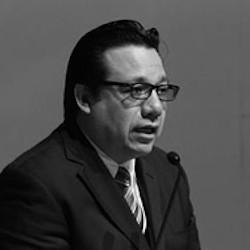

C. Carlos Alberto Arredondo Sibaja

Institución que lo propone: Universidad Autónoma de Coahuila.
Lugar de Residencia: Saltillo, Coahuila de Zaragoza.
Formación Académica:
- Maestría en Derecho, con acentuación en Derechos Humanos, por la Universidad Autónoma de Coahuila. (En curso)
- Licenciatura en Derecho, por la Universidad del Valle de México.
- Maestría en Administración y Alta Dirección, por la Universidad Iberoamericana campus Torreón.
- Ingeniería Industrial y de Sistemas, por la Universidad Autónoma de Coahuila.
Antecedentes Laborales:
- Secretario Académico de la Facultad de Jurisprudencia de la U.A de C.
- Consejero Electoral en el Instituto Electoral y de Participación Ciudadana de Coahuila.
- Coordinador de Asesores de la oficina de la Consejera Lourdes López Flores en el Instituto Federal Electoral.
- Asesor Parlamentario del Congreso del Estado de Coahuila.
- Síndico del Ayuntamiento de Acuña Coahuila.
- Columnista y Miembro del Consejo Editorial del periódico Vanguardia.
- Editorialista en los noticiarios radiofónicos de Jaubert Tafich Organización.
- Corresponsal de la agencia de noticias Notimex en Acuña, Coahuila.
- Director de noticias en la estación radiofónica XHPL FM en Acuña, Coahuila.
Otras actividades relevantes:
Como Asesor de la Consejera Lourdes López Flores en el Instituto Federal Electoral, represento en reiteradas ocasiones a la Consejera en el Comité de Adquisiciones, Arrendamientos y Servicios del Instituto, así como en la Comisión de Contraloría Interna del IFE, realizando tareas de supervisión y vigilancia en la adquisición de bienes.
Impartió la materia de Buen Gobierno en la especialidad de Gobierno Abierto, Transparencia y Rendición de Cuentas en la Facultad de Jurisprudencia de la U.A. de C.
Colaboró en la incorporación del contenido temático de la Cultura a la Legalidad, en el Plan de Estudios de la Facultad de Jurisprudencia de la UA de C.
Como Consejero del Instituto Electoral y de Participación Ciudadana de Coahuila, formo parte de las Comisiones de Administración y Servicio Profesional, de Lista Nominal y Participación Ciudadana, de Organización y Capacitación Electoral, de Acceso de los Partidos Políticos a Radio y Televisión, de Comunicación Social, y de Votación Electrónica.